Prof. Clarkson
Researcher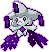
Wishes of TomorrowA FLATFOOT GAMES RELEASE
Free · Game Boy Advance · v1.2.6
Wishes of Tomorrow.
When Jirachi, the Undying Wish, awakens from its thousand-year slumber to grant a single wish, you're not the only one racing toward its promised power.
64 new mapsdrawn tile by tile
Gens I–X50+ new sprites
12 queststracked in the menu
Play in browserno emulator needed
Official trailer
The wish is waiting.
Witness Mega Power. Capture Darkness. Seek the promised land of Shin-Tokyo.
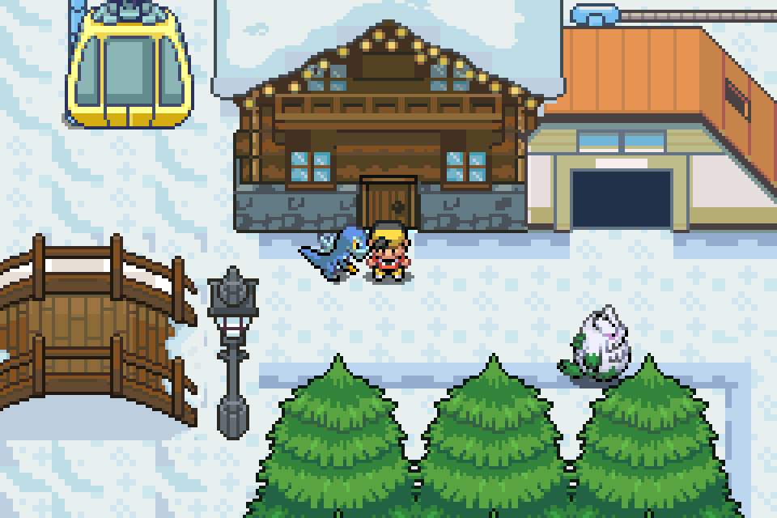
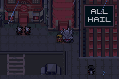
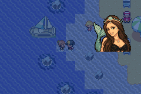
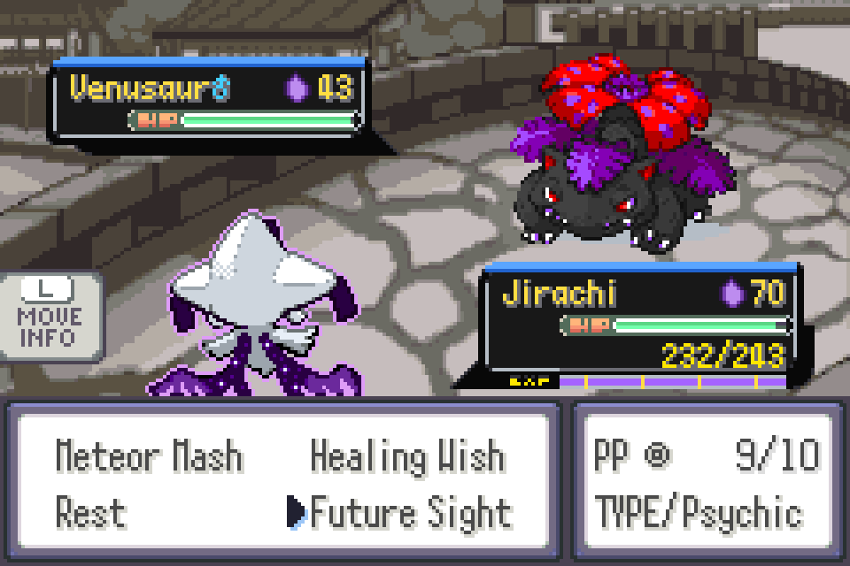
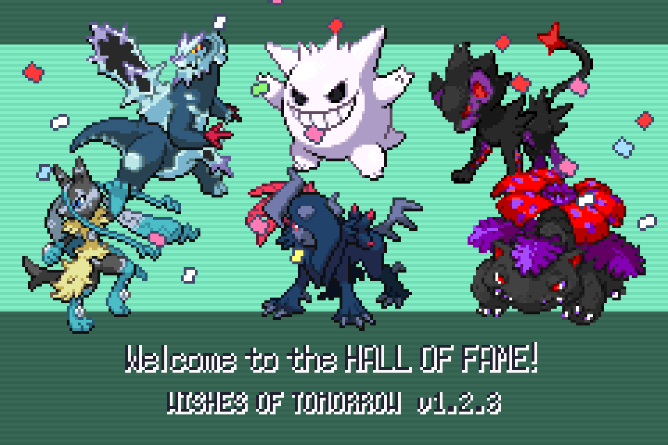
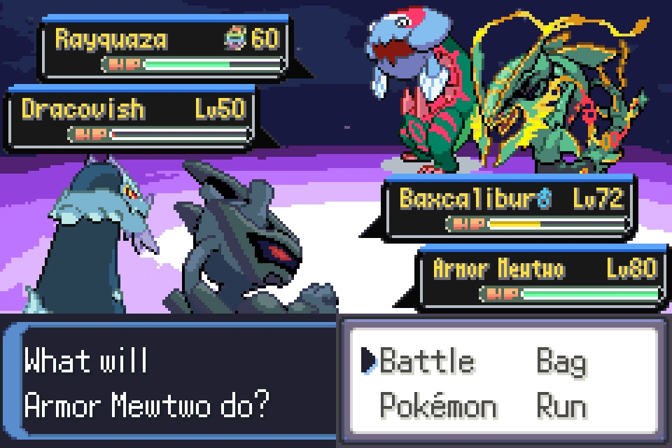
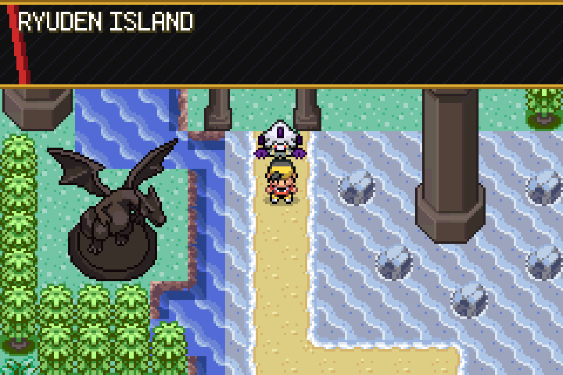
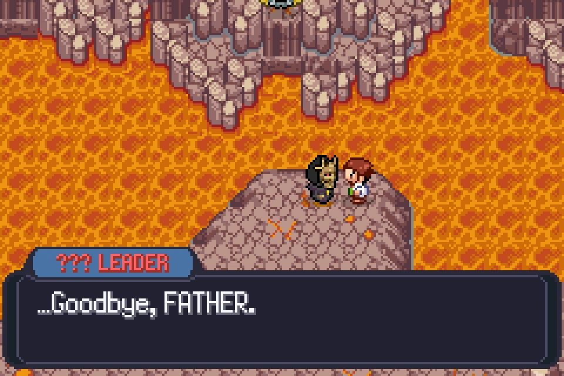
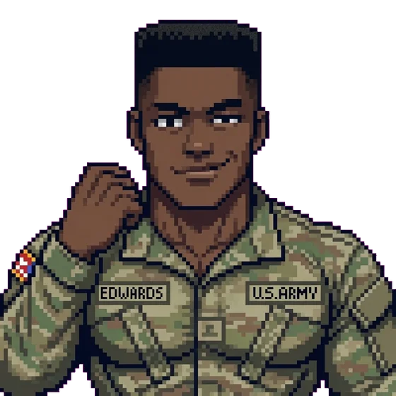
Edwards
RivalRed Fatality
Antagonist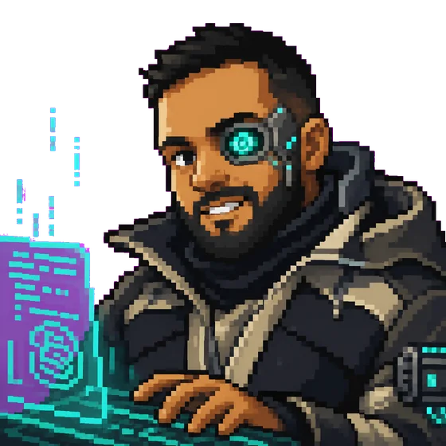
The Minister
EdgerunnerAllison
SirenMikmanc
Lab techYiffer
Dojo leader
Free · no account · no launcher
ALSO LISTED ONHackdex
Download v1.2.6.
Grab the patch from the latest release and apply it to your own legally obtained base ROM.
Downloads from heresince 12 August 2026
Downloads on Hackdex
Two separate counts. Neither includes the other, so they are never added together.
Patch & play
100% local · no upload-
1
Your base ROMNo file chosen
-
2
The patchLoading…
-
3
Apply the patchChecks your ROM against the patch first.
-
4
Play in browserKeyboard on desktop, a touch pad on phones.
Loading the patcher…
We share a patch, not a game. Bring your own legally obtained ROM; it never leaves your device.
Now playing
Desktop: arrows + Z/X, Enter for Start. Phone: the pad appears on its own; Fast toggles fast-forward and Fullscreen goes big. Saves live in this browser; export from the emulator's menu to keep one.
Quality of life changes
What's inside.
Ten generations, an original region beneath Mt. Fuji and a reworked battle system. The tedium is gone; the game isn't.
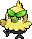
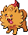
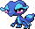
Gens I–X, 50+ new sprites
Ten generations in one region, plus over fifty sprite designs drawn for this game alone.
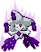
Shadow Pokémon
The Snag Machine from XD: Gale of Darkness is back. Shadow Pokémon are stronger but take more damage, and may disobey or go into Hyper Mode.
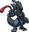
Randomizer mode
Play the game with random spawns, starters, or trainers.
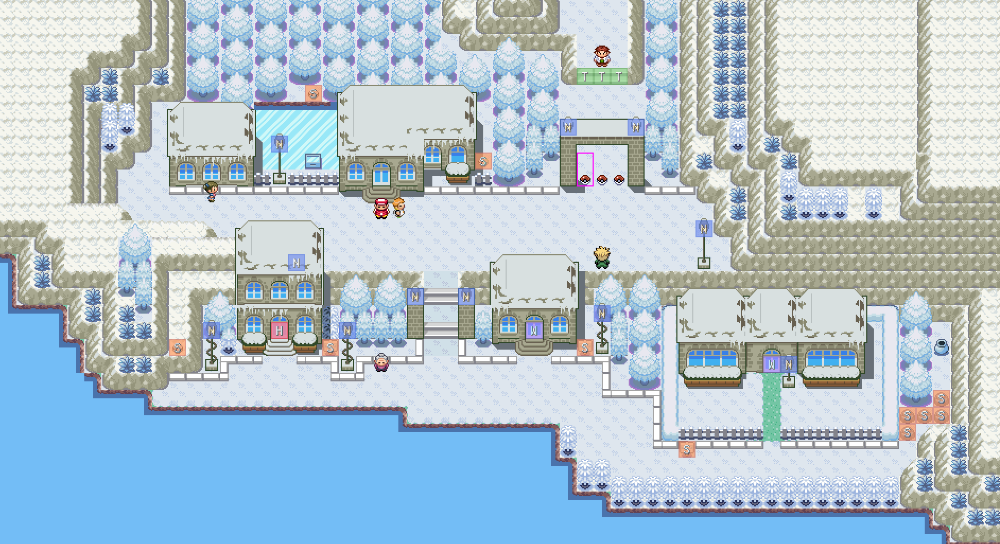
64 new maps
Towns, a lake, a shrine road and a mountain you can actually climb.
道しるべ
Field guide.
Pick a map. The line is the route through it; the numbers are what is worth stopping for. Spoilers throughout.
49 mapsAll three acts
Open the guide
Changelog
v1.2.6New3 October 2026
- No more crash after leaving the beach lifeguard shack or the yacht. One beach trainer was drawn with a FireRed sprite whose colours this game doesn't have, and opening the Bag or another menu afterwards could freeze it. She's gone.
- The yacht lets you aboard once you have the Yacht Key. Below deck are three prototypes, Browt, Pombon and Gecqua, and you get to keep one.
- Randomized trainers fight with real movesets. Every swapped Pokémon used to be stuck on Struggle.
- The map shows this region around Sennen instead of Kanto, and Fly works from the Sennen beach.
- New in Options: fast forward at 2x for an easier pace on the overworld (battles still run as fast as 3x), and AUTO SPRINT, either a tap of B to switch between running and walking or the classic hold B to run.
- An Infinite Candy for new games: a Rare Candy that never runs out.
- A new title screen, a new look for General Edwards, and character portraits switched off until they're redrawn by hand.
v1.2.423 September 2026
- You can get off the Shinkansen again. The door tile had never been marked as a door, so the exit the map declared never fired and the carriage was a dead end. Fixed on both trains.
- Yiffer makes you earn the free sample. The Strength HM in Munen Tunnel now comes after a fight, with a boss card, Zangoose, Zeraora and a Machamp.
- Walnut Woods is redrawn on the snow set, with Munen Village touched up alongside it.
- The space battle backdrop is credited to LibertyTwins, who drew it.
v1.2.321 September 2026
- The early game is redrawn: your bedroom, Munen Village, Munen Lake, Walnut Woods and Frostwood Town, on new snow tilesets with ice you slide on and snow that keeps your footprints.
- Losing to a trainer whites you out again. It had stopped after the first Snag, which is why Ryoko kept re-challenging and the Oni handed over his badge anyway.
- Fast forward no longer freezes a battle when you close the Bag or the Pokémon menu.
- Ryuden Island's Dragon Wardens and egg no longer vanish because you picked up the Munen Master Ball or the Super Rod first.
- Shadow Jirachi's battle sprite is back in one piece, and the title screen and character portraits got a proper clean-up.
- Each starter pedestal rolls its own 1-in-10 shiny, and the preview shows it before you choose.
- The clock runs on play time now, and the Start menu shows the day, the time and your money.
- Shiny Gengar follows you in white, matching its battle sprite. Follower art by CloneBtw.
v1.2.29 September 2026
- Wild double battles turn up now, and you can aim a Poké Ball at whichever one you actually want.
- Shinies at 1 in 256, with a gold HP box so you cannot scroll past one by accident.
- An Exp. Share in your bag from the first step. Switch it off any time by using it.
- 3x fast forward in Options. The music keeps its own time, so nothing sounds like a chipmunk.
- Each starter learned something with a bit of personality to it.
- The tower guards no longer crash the game on sight, which they had been doing rather reliably.
- The Minister will sell you a Mega Stone without taking the game down with him.
- NPCs stopped walking out through the walls. Clarkson in particular.
v1.2.128 August 2026
- Defragmented Siren Allison. She swims now.
- Restored Shadow Jirachi's aura — the wrong Jirachi had been turning up to its own boss fight.
- Upgraded the title screen art.
- Added post-game Battle Frontier access. The ship accepts passengers at last.
- Shadow Pokémon remembered how to Mega Evolve.
- Megas now turn up for the Hall of Fame photo instead of reverting.
v1.2.027 August 2026
- Randomizer Mode. Reroll starters, wilds and Trainers — levels stay exactly where they were.
- A dragon starter trio: Gible, Frigibax and Axew.
- Mega Stones, three of them lying around the Distortion World.
- A Game Corner that finally sells things worth the coins.
- The yacht questline pays out.
v1.1.013 August 2026
- Name your own character.
- Custom battle backdrops region-wide, including sea battles that know what time it is.
- Shadow sprites that sit right.
- Post-game FLY reaches everywhere.
- Save-compatible with v1.0.0 — keep your run.
v1.0.012 August 2026
- The whole three-act campaign.
- An original region.
- Shadow Pokémon: snag them, purify them.
Every release is listed on the releases page.
What you need
- Base ROM
- Your own legally obtained dump of Pokémon Emerald (U) — 16 MB unzipped, header code BPEE. A zipped copy (about 6 MB) is fine too: the patcher on this page unzips it for you. Not included, not linked.
- Patcher
- None needed — the patcher on this page runs in your browser. Flips works too if you'd rather do it offline.
- Emulator
- mGBA 0.10+ recommended. VBA-M and Delta on iOS also tested.
- Hardware
- Runs on original GBA hardware via flash cart, and on Analogue Pocket.
- Save files
- 128KB flash save. Set your emulator's save type to Flash 128K if it doesn't detect it.
- Or none of it
- You can skip every line above and play in this tab — patch your ROM here and press play. Keyboard on desktop, on-screen pad on phones, saves kept in your browser.
Who drew it
- Sprite design
- Rafael Sanna · aveontrainer · baylorhernandez · biadoxaf · DarkusShadow · jaov46
- Character art
- ToxShadows642
- Shadow sprites
- pogokitten · WeeGeeDude · Quanyails
- Tileset art
- pinkscales · Phyromatical · MagiScarf · PeekyChew · Elinthind · lo8jd · Dark Slayer
- Shin-Tokyo art
- Emeiry · Odisea by ekat99
- Battle backdrops
- carchagui · LibertyTwins · aveontrainer
The full roll — engine, music, playtesting — plays at the end of the game.
Questions people actually ask
Is it free?
Yes, and it stays that way. There is no paid tier, no cosmetics, and no donation nag inside the game.
Do I need the original cartridge?
You need your own legally obtained dump of Pokémon Emerald (U) to apply the patch to. We distribute a patch, not a game — we don't provide the base ROM and can't help you find one.
How do I apply the patch?
Use the patcher further up this page: choose your base ROM, press Apply, save the result. It all happens inside your browser — the ROM is never uploaded anywhere, and this site has no server that could receive it. If you'd rather patch offline, the file is a standard BPS and works with Flips or any other patcher.
Can I play it without installing an emulator?
Yes. Patch your ROM on this page, then press Play in browser — the emulator loads on demand and boots the ROM you just built, with keyboard controls on desktop and an on-screen pad on phones. Nothing is uploaded; the game runs on your own machine. Saves are kept in your browser, so export them from the emulator's menu if you want to move them to a real emulator or a flash cart.
The patcher says my ROM is wrong. Now what?
The patch stores a checksum of the exact base ROM it was built against, and the patcher compares yours to it. A mismatch almost always means a different region or revision, or a dump with a header still attached. You want the plain 16 MB Pokémon Emerald (U) file, code BPEE. A .zip of that file also works — the patcher unzips it before checking.
Can I play it on my phone?
Yes — any modern GBA emulator works. Delta on iOS and mGBA on Android are the two we test against each release.
Will saves carry over between versions?
Yes — v1.2.6 loads saves from every earlier version, and nothing in it touches a save slot. Patch a fresh ROM with the new version and keep using your existing save. One control works differently on any older save: B is now a tap that switches between running and walking, where it used to be held to walk. Choose HOLD B under AUTO SPRINT in Options for hold-to-run. Two things change on a save from v1.2.2 or earlier: the clock restarts from the first morning, because it now runs on play time; and if you have been to Ryuden Island, the Dragon Wardens and the egg can be available again, since they used to share save slots with the Munen Master Ball, the Munen Lake Super Rod and the Melting Mile path. Whenever a future version breaks save compatibility, the release notes will say so at the top.
How do I report a bug?
Open an issue on GitHub, or email joe@flatfootlabs.com with your version number and the save file if you have it.
Is there a sequel?
Something is in prototype. It's smaller, and it's not set near the mountain.